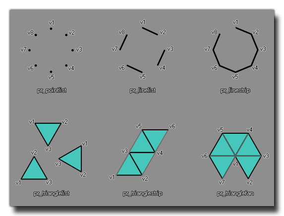

d3d_primitive_begin(kind)
| Argument | Description |
|---|---|
| kind | The kind of primitive you are going to draw. |
Returns: N/A
This function must be called before you can define any primitives. There are 6 types of primitives you can define with the following constants:
- pr_pointlist
- pr_linelist
- pr_linestrip
- pr_trianglelist
- pr_trianglestrip
- pr_trianglefan (This is not available on the HTML5 target platform and may not work correctly on some devices for other platforms)
The following image illustrates basically how these should look and also the order in which you should define the vertexes: 
d3d_primitive_begin(pr_trianglelist);
d3d_vertex(100, 100, 0);
d3d_vertex(100, 200, 0);
d3d_vertex(150, 150, 200);
d3d_vertex(100, 200, 0);
d3d_vertex(200, 200, 0);
d3d_vertex(150, 150, 200);
d3d_vertex(200, 200, 0);
d3d_vertex(100, 100, 0);
d3d_vertex(150, 150, 200);
d3d_vertex(100, 100, 0);
d3d_vertex(100, 200, 0);
d3d_vertex(200, 200, 0);
d3d_primitive_end();
The above code will draw a tetrahedron standing on the z=0 plane with its top at z = 200.